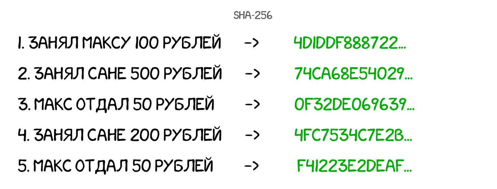

Свят берет общеизвестный хеш SHA-256 и хеширует им каждую запись, дописывая результат в конце.
Теперь Свят может удостовериться, что его записи никто не изменял, захешировав их заново и сравнив с зелёненьким.

Но ЗЛОЙ РЮСЬКИЙ САНЬОК тоже умеет в SHA-256 и легко может изменить запись вместе с её хешем. Особенно, если хеш написан прямо рядом на доске.